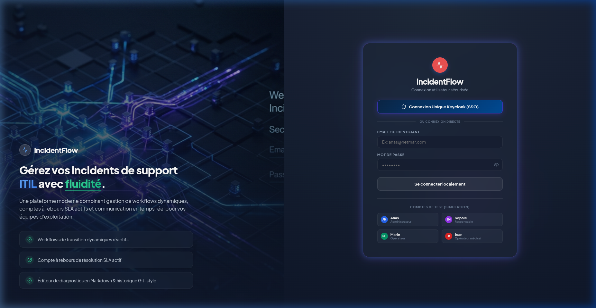

Centre de Documentation IncidentFlow
Découvrez l'architecture technique, les modules d'utilisation et les correspondances de code pour l'application de gestion d'incidents.
Fonctionnalités Clés Avancées
Accédez à une boîte de recherche globale. Tapez pour naviguer instantanément entre les pages ou rechercher un incident par code ou par titre pour l'ouvrir.
Raccourci clavierGarantit des données à jour en interrogeant périodiquement les APIs du serveur selon le délai configuré dans les paramètres.
Live SyncAu premier démarrage, le backend Spring Boot peuple la base de données avec des utilisateurs, rôles, workflows par défaut et exemples d'incidents.
DataInitializerArchitecture & Services
IncidentFlow s'exécute localement dans un environnement hybride où l'infrastructure de données tourne sous Docker et le code applicatif tourne sur la machine hôte.
Lancer l'Infrastructure (Docker)
Depuis la racine, lancez la base PostgreSQL et le cache Redis :
docker compose up -d incidentflow-postgres incidentflow-redisLancer le Backend (Spring Boot)
Le backend s'exécute par défaut en mode dev-mock pour simuler Keycloak en développement hors-ligne :
cd backend
mvn spring-boot:runLancer le Frontend (React + Vite)
Installez les dépendances et démarrez le serveur à chaud (port 3000) :
cd frontend
npm install
npm run devInterface de Connexion :

Comptes de Test (Simulation hors-ligne)
Lorsque le profil de développement simulé est actif, utilisez les identifiants pré-configurés ci-dessous :